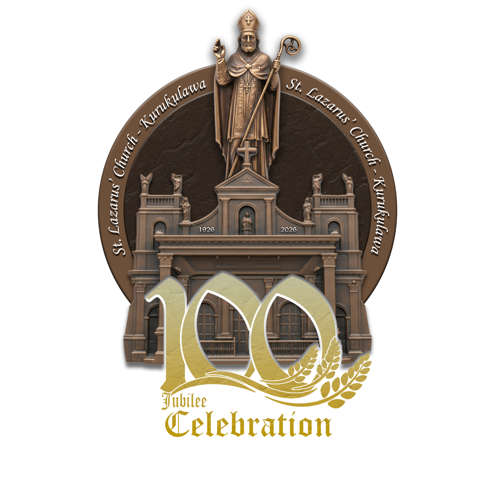

St. Lazarus' Church
Join our parish family as we celebrate 100 years of faith, hope, and love in Kurukulawa. A century of blessings continues.

Centennial Celebration
Join us as we prepare for this historic celebration of 100 years of faith and community at St. Lazarus' Church.
Proudly Celebrating 100 Years of Devotion in Faith at Kurukulawa.
Centennial Tribute
Listen to our special centennial hymn composed for this historic celebration of faith and community.
2026 St. Lazarus' Church, Kurukulawa. All Rights Reserved.
This hymn is protected by copyright law. Reproduction, distribution, or public performance without
explicit permission is prohibited.
Centennial Celebrations
Join us for a series of special events throughout our centennial jubilee year, celebrating 100 years of faith and community.
Join us for the grand re-open of our church after months of renovations and restoration works, celebrating 100 years of faith and community.
Join us for the ceremonial hoisting of the flagstaff at our parish community according to the traditional procedure of preparation for the feast.
Join us for the daily Mass and Novena at our parish community.
Join us for the blessing of the sick at our parish community.
Join us for the day of repentance.